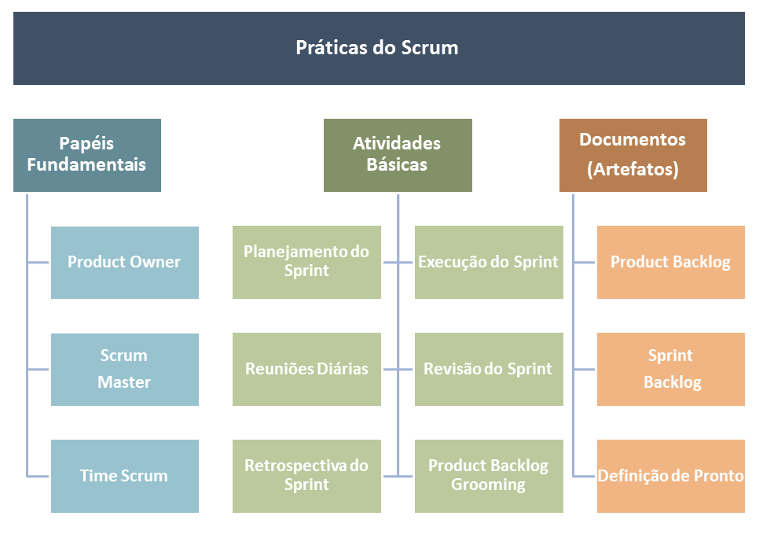
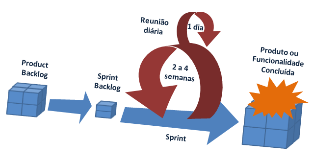
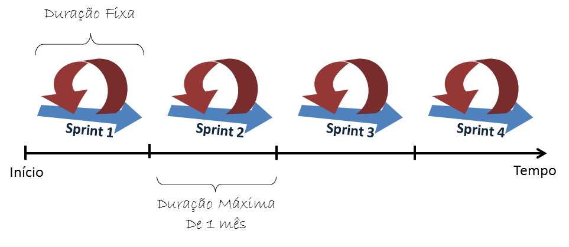
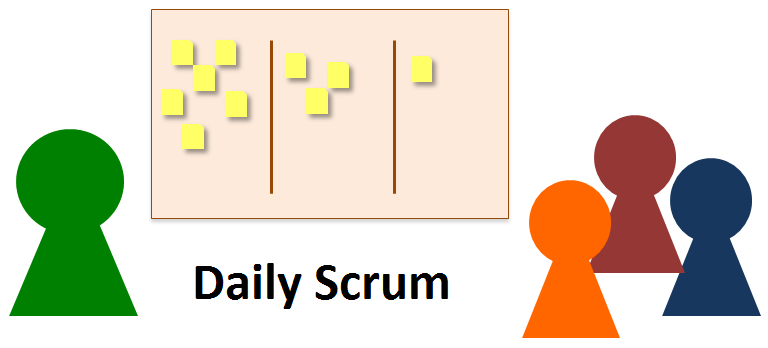

- O SCRUM consiste em equipes ou times SCRUM, com seus papeis associados, eventos com duração fixa e artefatos, tendo pelo menos três:
- Product Owner
- Scrum Master
- Time Scrum
Método de desenvolvimento Scrum
- O SCRUM é um framework - conjunto de ferramentas e técnicas - que é usado para o desenvolvimento ágil de software de forma interativa e incremental;
- O nome SCRUM vem de uma jogada ou formação de rugby, em que oito jogadores de cada time devem se encaixar para formar uma muralha. É um muito importante que todo o trabalho seja realizado em equipe, pois se um membro falha, toda a joga é comprometida.
- Com isso, o método também é em equipe e um membro depende de outro para desenvolver e chegar ao produto final.
- O processo SCRUM foi estabelecido por Ken Schwaber e Jeff Sutherland e está baseado no manifesto ágil, que defende os pontos:
- Pessoas e suas interações são mais importantes do que processos e ferramentas;
- Software funcionando é mais importante do que documentação extensa e abrangente;
- Colaborar com o cliente é o mais importante do que negociar contratos;
- Responder a mudanças essenciais com agilidade e flexibilidade é mais importante do que seguis o plano;

- Atividades Básicas e Documentos:
- Produto Backlog e Grooming
- Sprint
- Planejamento e Execução do Sprint
- Reuniões Diárias
- Definição de Pronto
- Revisão da Sprint
- Retrospectiva da Sprint
Product Owner:
- Product Owner é o ponto central com poderes de liderança sobre o produto. Ele é o único responsável por decidir quais recursos e funcionalidades serão construídos e qual a ordem que devem ser feitos.
- É responsabilidade dele manter e comunicar a todos os outros participantes uma visão clara do que a equipe Scrum está buscando alcançar no projeto. Como tal, ele é responsável pelo sucesso global da solução.
- Para garantir que a equipe construa rapidamente o que o Product Owner precisa, ele deve colaborar ativamente com o ScrumMaster e equipe de desenvolvimento e deve estar disponível para responder às perguntas tão logo estas são feitas.
Scrum Master:
- O ScrumMaster é responsável por ajudar a todos os envolvidos a entender e abraçar os valores, princípios e práticas do Scrum.
- Ela age como um Coach, executando a liderança do processo e ajudando a equipe Scrum (e o resto da organização) a desenvolver sua própria abordagem do Scrum, que tenha a melhor performance, respeitando as particularidades da organização.
- O ScrumMaster também tem um papel de facilitador. Ele deve ajudar a equipe a resolver problemas e fazer melhorias no uso do Scrum. Ele também é responsável por proteger a equipe contra interferências externas e assume um papel de liderança na remoção de impedimentos que podem atrapalhar a produtividade.
- Normalmente o ScrumMaster não tem autoridade para exercer o controle sobre a equipe, de modo que este papel não é o mesmo que o papel tradicional do Gerente de Projeto ou Gerente de Desenvolvimento. O ScrumMaster age como um líder, não como um gerente.
Time ou Equipe:
- No desenvolvimento tradicional de software são abordados vários tipos de trabalho, tais como: arquiteto, programador, testador, administrador de banco de dados, Designer, e assim por diante.
- No Scrum é definido o papel do Time de Desenvolvimento, que é simplesmente a junção de todas essas pessoas em uma equipe multidisciplinar, e que são responsáveis pela concepção, construção e testes do produto.
- A idéia principal é que a equipe de desenvolvimento se auto-organiza para determinar a melhor maneira de realizar o trabalho para atingir a meta estabelecida pelo Product Owner.
- Um time de desenvolvimento tem tipicamente entre 5 e 9 pessoas; e seus membros devem ter coletivamente todas as habilidades necessárias para produzir, com qualidade, software funcionando.
Product Backlog e Grooming:
- O Product Owner tem uma visão do que ele quer criar (o grande cubo). Como o cubo pode ser grande, por meio de uma atividade chamada Grooming, ele é dividido em um conjunto de funcionalidades que são compilados em uma única lista priorizada chamado de Product Backlog.
- Então é feito a primeira reunião de Planejamento de Sprint, para definir o Sprint Backlog, que contém todo o trabalho que será executado durante o Sprint.
- O Sprint tem duração média de 2 a 4 semanas e são feitas reuniões diárias de acompanhamento (Daily Scrum) do trabalho.
- No Scrum, sempre fazemos o trabalho mais importante primeiro.
- O Product Owner, com ajuda do resto da equipe Scrum e as partes interessadas, é o responsável por determinar e gerir a seqüência deste trabalho e comunicando-o na forma de uma lista de prioridades conhecida como o Product Backlog.
- Product Owner, em conjunto com as demais partes interessadas no produto, definem os itens do Product Backlog.
- Em seguida, ele garante que os itens do Backlog são colocadas na seqüência correta (usando fatores como valor, custo, conhecimento e risco), de modo que os itens de alto valor, aparecerá no topo do backlog do produto e os itens de menor valor aparecer em direção ao fundo.
- O Product backlog é um documento que está constantemente evoluindo. Os itens podem ser adicionados, excluídos e revisto pelo Product Owner por conta de mudanças nas condições de negócios, ou conforme a compreensão da equipe Scrum sobre o produto aumenta.
- Em geral, a atividade de criar e de refinar os itens do product backlog, estimando o tamanho e esforço de cada item, é chamada de Grooming.
- Antes de finalizar a priorização, ou refinamento do produto backlog, é preciso saber o tamanho de cada item. É importante que o Product Owner saiba o custo de cada item para que possa determinar a sua prioridade de forma adequada. O Scrum não especifica como você deve medir o tamanho dos itens do backlog.

Sprints:
- No Scrum, o trabalho é realizado em iterações ou ciclos de até um mês de calendário chamado de Sprints.
- O trabalho realizado em cada sprint deve criar algo de valor tangível para o cliente ou usuário. Sprints são timeboxed (duração fixa) para que tenham sempre um início e fim data fixa, e, geralmente, todos eles devem estar com a mesma duração.

Planejamento e Execução da Sprint:
- O product backlog pode representar muitas semanas ou até meses de trabalho, o que é muito mais do que pode ser concluído em um único e curto sprint.
- Para determinar quais os subconjuntos de itens do Product Backlog mais importantes para construir no próximo sprint, o product owner, junto com o time de desenvolvimento e ScrumMaster, devem realizar o Sprint Planning.
- Durante o planejamento do sprint, a equipe de desenvolvimento e o product owner devem chegar a um acordo sobre qual o Objetivo do Sprint.
- Com este objetivo em mãos, eles determinam quais os itens do backlog devem ser priorizados para serem executados neste Sprint.
- A maioria das equipes Scrum que estão realizando Sprints de duas semanas a um mês de duração tentam completar o planejamento do sprint em cerca de 4 a 8 horas.
- Um sprint de uma semana não deve tomar mais do que 2 horas para planejar.
Reuniões Diárias:
- Todos os dias, idealmente no mesmo horário, os membros da equipe de desenvolvimento devem realizar uma reunião com tempo definido (15 minutos ou menos), chamado Daily Scrum.
- Esta reunião também é muitas vezes chamada de Stand-Up Meeting, por causa de uma prática recomendada para que a reunião seja feita em pé (com a intenção de fazer com que a reunião seja rápida).
- Uma abordagem comum nesta reunião é o Scrum Master perguntar para cada membro da equipe três perguntas:
- 3 Perguntas básicas para as reuniões diárias:
- O que fiz ontem que ajudou o time a atingir a meta do sprint?
- O que vou fazer hoje para ajudar o time a atingir a meta do sprint?
- Existe algum impedimento que não permita a mim ou ao time atingir a meta do sprint?
- Ao responder a estas questões, todos conseguem visualizar de uma maneira geral como está progredindo o trabalho do Sprint em direção à meta.

Definição de Pronto:
- Para saber quando, e como, uma parte do produto ou funcionalidade deve ser considerada concluída nós utilizamos um documento chamado Definition of Done.
- Para aprender mais sobre DoD, clique aqui e leia o nosso artigo completo sobre o assunto.
- Embora, isso varie significativamente de um extremo ao outro para cada time Scrum, os integrantes devem ter um entendimento compartilhado do que significa o trabalho estar completo, assegurando a transparência. Esta é a “Definição de Pronto” para o Time Scrum e é usado para assegurar quando o trabalho esta completado no incremento do produto.
Revisão da Sprint:
- No final do Sprint, existem duas atividades adicionais que são fundamentais. Uma delas é chamada Sprint Review.
- O objetivo desta atividade é verificar e adaptar o produto que está sendo construído.
- Esta é uma reunião informal, e a apresentação do incremento destina-se a motivar e obter comentários e promover a colaboração.
Retrospectiva da Sprint Diárias:
- Enquanto o objetivo do Sprint Review é verificar necessidades de adaptações no produto, o Sprint Retrospective tem como objetivo verificar necessidades de adaptações no processo de trabalho.
- A Retrospectiva do Sprint ocorre depois da Revisão da Sprint e antes da reunião de planejamento da próxima Sprint. Esta é uma reunião time-boxed de três horas para uma Sprint de um mês.